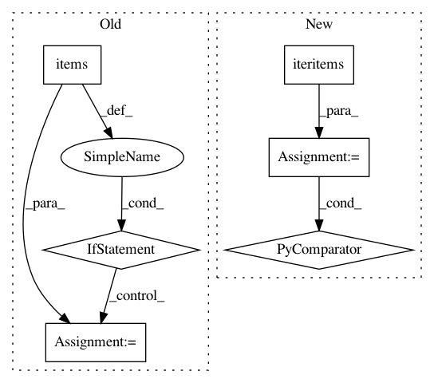

21491193a9943e93c94a5bf85bf608d43585eb86,tensorboard/plugins/text/text_plugin.py,TextPlugin,index_impl,#TextPlugin#,282
Before Change
// use case.
name = "tensorboard_text"
run_to_assets = self._multiplexer.PluginAssets(name)
for run, assets in run_to_assets.items():
if run in run_to_series:
// When runs conflict, the summaries created via the new method override.
continue
if "tensors.json" in assets:
tensors_json = self._multiplexer.RetrievePluginAsset(
run, name, "tensors.json")
tensors = json.loads(tensors_json)
run_to_series[run] = tensors
else:
// The mapping should contain all runs among its keys.
run_to_series[run] = []
return run_to_series
def _fetch_run_to_series_from_multiplexer(self):
// TensorBoard is obtaining summaries related to the text plugin based on
After Change
mapping = self._multiplexer.PluginRunToTagToContent(metadata.PLUGIN_NAME)
return {
run: list(tag_to_content)
for (run, tag_to_content)
in six.iteritems(mapping)
}
@wrappers.Request.application
def tags_route(self, request):
In pattern: SUPERPATTERN
Frequency: 3
Non-data size: 6
Instances
Project Name: tensorflow/tensorboard
Commit Name: 21491193a9943e93c94a5bf85bf608d43585eb86
Time: 2019-07-17
Author: wchargin@gmail.com
File Name: tensorboard/plugins/text/text_plugin.py
Class Name: TextPlugin
Method Name: index_impl
Project Name: brian-team/brian2
Commit Name: 8ce9ba936cbce97d2b3f90c5fffe0863345d76b5
Time: 2017-08-28
Author: charleetje@gmail.com
File Name: brian2/codegen/generators/GSL_generator.py
Class Name: GSLCodeGenerator
Method Name: find_function_names
Project Name: snipsco/snips-nlu
Commit Name: 7c50d9677032e4ea15c5c5ca5c96a85994aa39a4
Time: 2018-02-15
Author: clement.doumouro@gmail.com
File Name: nlu_dataset/assistant_dataset.py
Class Name: AssistantDataset
Method Name: json